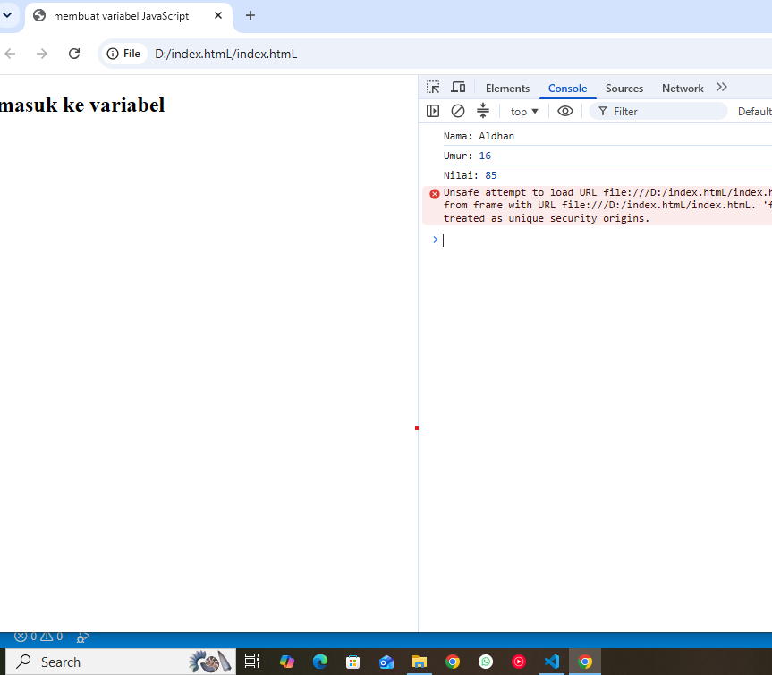
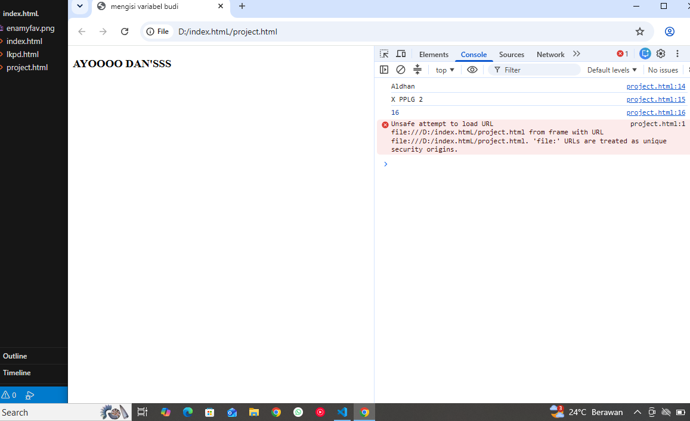

A. IDENTITAS PEMBELAJARAN & IDENTITAS SISWA
B. TUJUAN PEMBELAJARAN
- Menjelaskan pengertian variable dengan bahasa sendiri.
- Menjelaskan fungsi variable dalam program.
- Membedakan let dan const secara sederhana.
- Membuat variable menggunakan JavaScript.
- Memberikan nama variable sesuai aturan penamaan.
- Menyimpan data berupa teks dan angka ke dalam variable.
- Menampilkan nilai variable menggunakan console.log()
- Membuat program sederhana menggunakan beberapa variable.
- Menemukan dan memperbaiki kesalahan sederhana pada variable.
C. PETUNJUK KESELAMATAN & KERJA
- Gunakan komputer/laptop dengan hati-hati. Jangan menghapus file milik teman.
- Simpan pekerjaan secara berkala. Jangan menyalin kode teman tanpa memahami fungsinya.
- Jika menemukan error, jangan panik. Baca pesan error dan diskusikan penyebabnya.
- Setiap anggota kelompok harus memahami hasil pekerjaan kelompok.
D. APERSEPSI
Bayangkan kamu sedang membuat aplikasi data siswa. Program perlu mengetahui: Nama siswa, Kelas, Umur, Nilai, Jurusan.
Kelas = "XI RPL 1"
Umur = 16
Nilai = 85
E. AKTIVITAS 1 - MENGAMATI
Perhatikan kode berikut dan jawab pertanyaannya:
let umur = 16;
let nilai = 85;
console.log(nama);
console.log(umur);
console.log(nilai);

F. AKTIVITAS 2 - MENGENAL VARIABLE
Variable dapat dianggap sebagai tempat untuk menyimpan sebuah data agar data tersebut dapat digunakan kembali oleh program.
| Bagian | Fungsi |
|---|---|
| let | Membuat variable |
| nama | Nama variable |
| = | Memberikan nilai |
| "Andi" | Nilai yang disimpan |
G & H. AKTIVITAS 3 & 4 - PRAKTIK & EKSPERIMEN CODE EDITOR & RUNNER
Uji coba dan jalankan kode JavaScript secara langsung di bawah ini. Ubah nilai sesuai data kamu!

Hasil Pengamatan Aktivitas 3:
Pertanyaan Aktivitas 4:
I. AKTIVITAS 5 - VARIABLE UNTUK MENYIMPAN BERBAGAI DATA
Lengkapi identifikasi jenis data berikut:
| Variable | Nilai | Jenis Data |
|---|---|---|
| nama | "Andi" | |
| umur | 17 | |
| tinggi | 170 | |
| aktif | true |
Kesimpulan:
Data yang ditulis menggunakan tanda kutip seperti "Andi" merupakan data:
Sedangkan 17 merupakan data:
J. AKTIVITAS 6 – MENGENAL let DAN const
Lengkapi tabel kegunaan let dan const:
| Keyword | Nilai dapat diubah? (Ya/Tidak) | Kegunaan Sederhana |
|---|---|---|
| let | ||
| const |
K & L. AKTIVITAS 7 & 8 - ATURAN PENAMAAN VARIABLE
Berikan tanda centang (V) untuk nama variable yang benar dan silang (X) untuk yang salah:
| No. | Nama Variable | Status (V / X) |
|---|---|---|
| 1 | nama | |
| 2 | namaSiswa | |
| 3 | nama_siswa | |
| 4 | 2nama | |
| 5 | nama siswa | |
| 6 | nilaiAkhir | |
| 7 | nilai1 | |
| 8 | nilai-akhir | |
| 9 | Alamat | |
| 10 | alamatSiswa |
M. AKTIVITAS 9 - TANTANGAN DATA DIRI
Buat program JavaScript minimal 5 variable yang menyimpan: Nama, Kelas, Jurusan, Umur, Hobi.
N. AKTIVITAS 10 - TANTANGAN LEVEL 2 (NILAI SISWA)
Simpan data: Nama siswa, Nilai Bahasa Indonesia, Nilai Matematika, Nilai Produktif.
O. AKTIVITAS 11 - DEBUGGING
Perbaiki program berikut yang memiliki error:
let umur = 16;
let 2kelas = "XI RPL";
console.log(nama siswa);
console.log(umur);
console.log(2kelas);
P. AKTIVITAS 12 - CHALLENGE PROFIL SISWA
Buat program menggunakan const dengan minimal 7 variable dasar ditambah 2 variable tambahan!
Q. AKTIVITAS 13 – THINK PAIR SHARE
R & S. REFLEKSI & REFLEKSI 3-2-1
3 Hal yang Saya Pelajari:
2 Hal yang Masih Membingungkan:
1 Hal yang Ingin Saya Coba:
T. KESIMPULAN
• Variable adalah
• let digunakan untuk
• const digunakan untuk
• Untuk menampilkan isi variable ke Console kita dapat menggunakan
U. TUGAS INDIVIDU - DATA PRODUK SEDERHANA
Tema: "Data Produk Sederhana" (Minimal 6 variable menggunakan let dan const).
Y. EXIT TICKET
Selesai Mengerjakan LKPD?
Pastikan semua isian, jawaban, dan kode program telah diuji coba melalui console. Klik tombol di bawah untuk merekap atau mengunduh hasil pekerjaanmu.